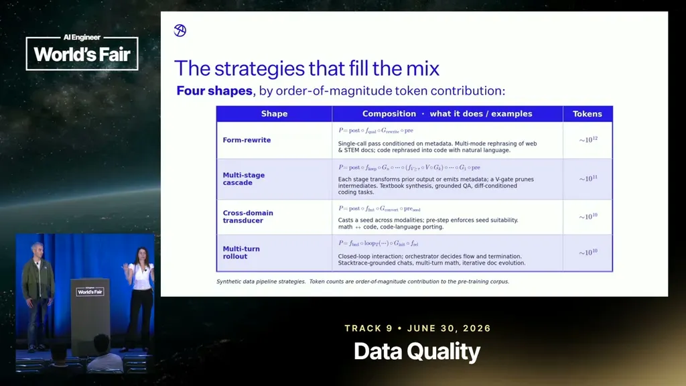
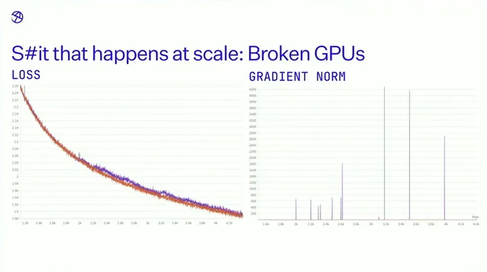
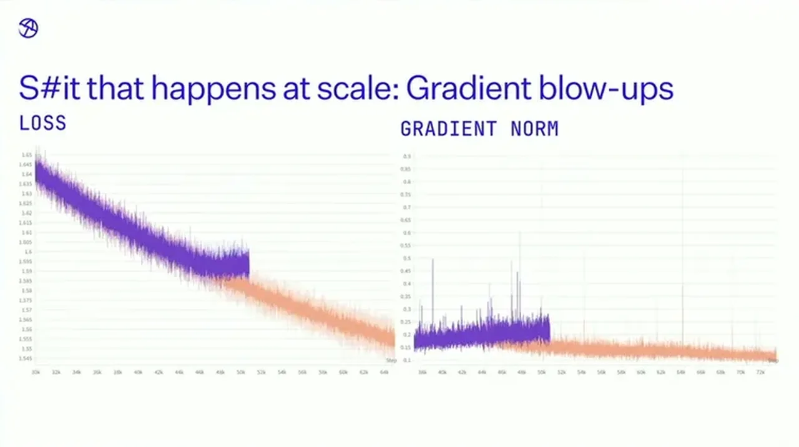
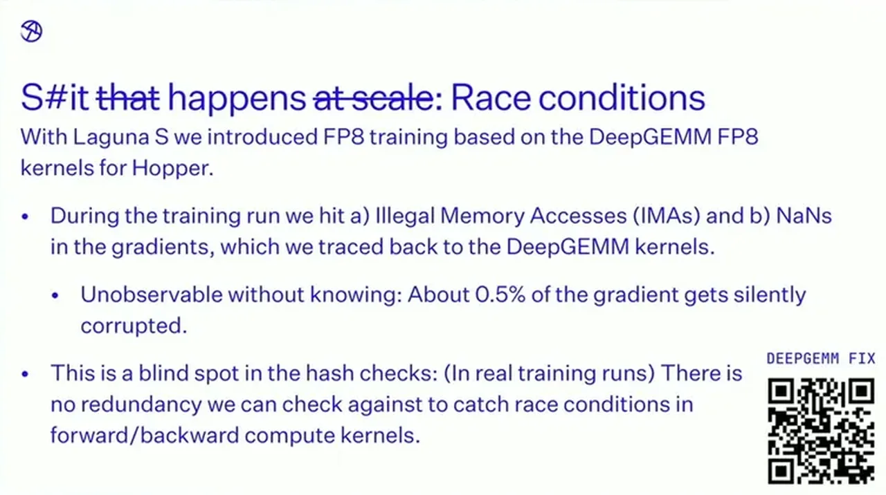

The Messy Reality of Scale: Synthetic Data and Pre-Training
If you only read one thing
- poolside settled on synthetic data making up 13% of the pre-training mix for Access XS point two, on top of a continuously growing six trillion token synthetic corpus (c1, c2).
- Comparing model-weight hashes across replicas caught a broken GPU causing silent data corruption, while exploding gradients were traced to BF16 accumulation precision loss before the LM head and fixed by moving that step to FP32 (c4, c5, c6).
- Scaling to Laguna S (118B total / 8B active parameters, 30 trillion tokens, 4,000 GPUs) surfaced a new failure: FP8 kernels caused a race condition silently corrupting about 0.5% of gradients, undetectable by the replica-hash method (c7, c8).
poolside frames synthetic data as a way to surface implicit rationale, planning, and structure that is hidden in organic data rather than a substitute for it. For the Access XS point two pre-training mix, synthetic data was set at 13%, and the team has continued generating more since, building a synthetic corpus that has reached six trillion tokens and keeps growing.
“for access point two in particular, we settled on 13% of the mix”
▶ watch at 02:36“we have a six trillion token uh corpus that's continuously growing”
▶ watch at 02:36
poolside decomposes every synthetic data pipeline into the same six components (seeds, metadata, generator, filters/validators, etc.) and varies complexity from cheap rephrasing pipelines to multi-stage, multi-agent workflows. The stated rule of thumb is that if a task is too hard for the generating model it will lose correctness and diversity, so tasks should be broken into simpler steps instead of handed to the model whole.
“if task is too hard for your model, then your model will start to fall on its face. Lose correctness, lose diversity. So break down the task, make it simpler.”
▶ watch at 05:44
Because training runs distributed data-parallel replicas that should always hold identical weights, poolside periodically hashes the weights across replicas as an invariant check and crashes training if they diverge. One real incident traced to this method was a broken GPU that silently corrupted data and produced a visibly spikier loss curve and much larger gradient norms than an otherwise identical run.
“we know there's an invariant, the weight should always be the same across all of these replicas”
▶ watch at 09:53“That broken GPU caused silent data corruption and um therefore made the training behave the way it did”
▶ watch at 10:55
During training of Laguna M.1, loss stopped converging around 50,000 steps because activations grew large before the unembedding layer and the tensor-parallel accumulation there was performed in BF16, which ran out of numerical precision. Moving that accumulation to FP32 from the same checkpoint restored convergence and brought gradient norms back down.
“We moved that accumulation into FP32 and from there on the model started converging again”
▶ watch at 12:26
Laguna S was scaled to 118 billion total parameters (8B active), trained on 30 trillion tokens across 4,000 GPUs, partly to test whether earlier fixes held at larger scale. FP8 training using open-source DeepSeek FP8 kernels introduced a race condition that silently corrupted about 0.5% of gradients with random values, a failure mode the existing replica-hash check cannot detect because production runs lack redundant identical replicas to compare against.
“we noticed about 0.5% of the gradient gets silently corrupted, essentially replaced by random values”
▶ watch at 14:30“we scaled this to a model that's 118 billion uh total parameters and 8B active parameters. Again, we trained it on 30 trillion tokens on 4,000 GPUs”
▶ watch at 13:28
Commentary (ours)
(ours) The replica-hash method only works because training deliberately runs redundant identical replicas; the speakers note this is also its blind spot; for production runs without that redundancy, the FP8 race condition went undetected until it produced NaNs, which suggests hash-checking alone isn't a complete answer to silent corruption at scale.


Underlying detail — every claim, typed and timestamped (9)
| Stance | Claim | t |
|---|---|---|
| asserts | For Access XS point two, synthetic data made up 13% of the pre-training mix. | 02:36 |
| asserts | poolside has built a continuously growing six trillion token synthetic data corpus. | 02:36 |
| recommends | If a task is too hard for the generating model, it loses correctness and diversity, so tasks should be broken down into simpler steps. | 05:44 |
| asserts | poolside checks that model weights are identical across all training replicas as an invariant, and crashes training if the hashes diverge. | 09:53 |
| asserts | A broken GPU caused silent data corruption that made an otherwise identical training run behave very differently. | 10:55 |
| asserts | Moving the unembedding accumulation from BF16 to FP32 fixed exploding gradients and restored convergence in Laguna M.1 training. | 12:26 |
| warns | An FP8 training kernel race condition silently corrupted roughly 0.5% of gradients by replacing them with random values. | 14:30 |
| asserts | Laguna S was scaled to 118 billion total parameters with 8B active, trained on 30 trillion tokens across 4,000 GPUs. | 13:28 |
| asserts | On coding evals, Laguna S outperformed poolside's own prior smaller and larger models, Access XS.2 and M.1. | 15:32 |
Machine-readable copy embedded in this page (script#ontology) and in the corpus ontology.